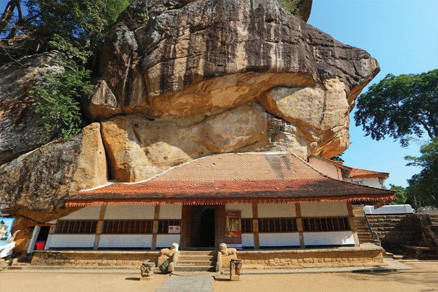

Matale often spelled (or pronounced) as Mathale is a mid-size regional city that geographically lies in the heart of the island, is nestled at an elevation of 300 meters in an expansive dense valley. Aa bland urban sprawl with a congested one-way system, Matale doesn’t see too many tourists. So it is quite possible for you to wish to not dawdle here for long. However, the road that lies towards the north of the town is encrusted with an array of welcoming spice plantations where cocoa, rubber, vanilla, cardamom, cinchona, and jackfruit thrive.
MATALE

Matale, town, central Sri Lanka,is a city in the Central Province of Sri Lanka about 150km away from Colombo and 14 miles (23 km) north of Kandy. A Buddhist monastery and rock temple (Aluvihara) are near the town. Matale’s intermediate elevation and moderate rainfall abet the cultivation of spices. There are extensive tea, rubber, and cacao plantations in the vicinity. Matale is the only district of Sri Lanka, where an ancient book of written history is found.
Alu Vihara
Sigiriya was built by the fifth-century by king Kashyapa, who ruled the native Sinhalese dynasty, the Moriya. The imposing fortress was the capital of the Sinhalese kingdom until Kashyapa was defeated in A.D. 495. Sigiriya, also called Lion Rock or Lion Mountain, site in central Sri Lanka consisting of the ruins of an ancient stronghold which is standing majestically 660 feet straight up. It is located the northern Matale district near the town of Dambulla in central province of Sri Lanka.
Sigiriya Fortress
Pitawala 'Pathana' is a unique grassland found in the Knuckles Conservation Forest, Sri Lanka. This pathana has a great ecological value. This grassland is situated by the side of the Rattota- Illukkumbura road in Matale district. In Pitawala Pathana a grass cover spreads over an area of about 1000 acres of a gently sloping rock slab covered with just a thin soil layer. The turf grass of about 10 cm in height gives a velvety appearance to this sloping expanse of grassland.